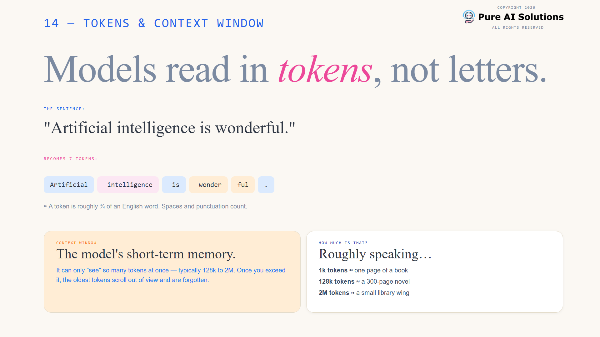
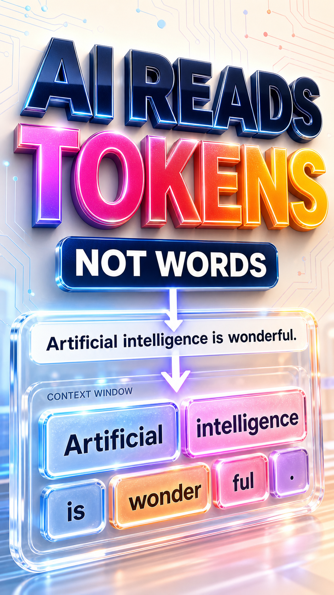

AI 101
Tokens + context
How the model sees text
Words become model-readable chunks.
"Artificial intelligence is wonderful."
Artificial
intelligence
is
wonder
ful
.
1 token
is roughly three quarters of an English word.
Context window
The model's short-term memory.
Prompt
Rules
Examples
Question
New info
Answer
Follow-up
New tokens enter. Older tokens can slide out of view.
Free course
Complete
AI for beginners
course
Understand AI without the jargon.
Training, inference, tokens, prompts, AI agents, APIs, ChatGPT, coding agents, and more
Description
Bio
Pinned comment
Subscribe
Follow
Like
AI Instructor
